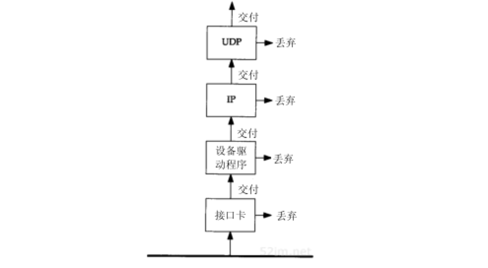
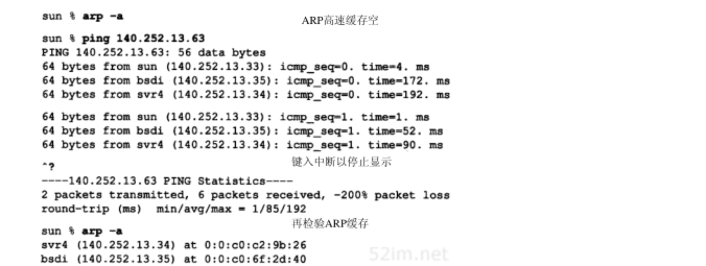
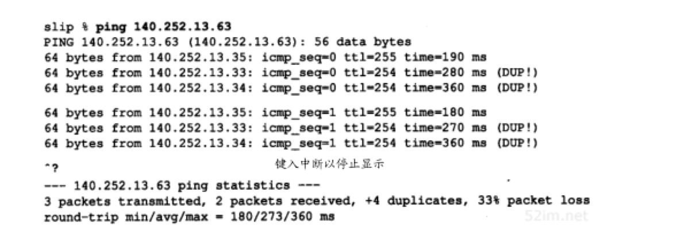
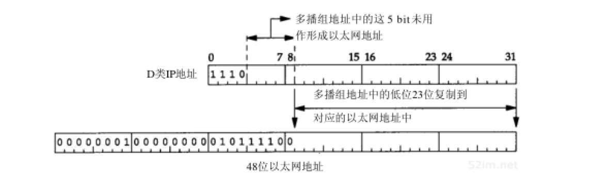

广播和多播
Table of Contents
以前提到过有三种IP地址：单播地址、广播地址和多播地址。本章将更详细地介绍广播和多播
广播和多播仅应用于UDP，它们对需将报文同时传往多个接收者的应用来说十分重要。TCP是一个面向连接的协议，它意味着分别运行于两主机（由IP地址确定）内的两进程（由端口号确定）间存在一条连接
考虑包含多个主机的共享信道网络如以太网。每个以太网帧包含源主机和目的主机的以太网地址（48bit）。通常每个以太网帧仅发往单个目的主机，目的地址指明单个接收接口，因而称为单播。在这种方式下，任意两个主机的通信不会干扰网内其他主机
然而，有时一个主机要向网上的所有其他主机发送帧，这就是广播。通过ARP和RARP可以看到这一过程。多播处于单播和广播之间：帧仅传送给属于多播组的多个主机
为了弄清广播和多播，需要了解主机对由信道传送过来帧的过滤过程。图12-1说明了这一过程：

网卡
网卡查看由信道传送过来的帧，确定是否接收该帧，若接收后就将它传往设备驱动程序。通常网卡仅接收那些目的地址为网卡物理地址或广播地址的帧。另外，多数接口均被设置为混合模式，这种模式能接收每个帧的一个复制
大多数的网卡经过配置都能接收目的地址为多播地址或某些子网多播地址的帧：
- 对于以太网，当地址中最高字节的最低位设置为1时表示该地址是一个多播地址，用十六进制可表示为01:00:00:00:00:00
- 以太网广播地址ff:ff:ff:ff:ff:ff可看作是以太网多播地址的特例
如果网卡收到一个帧，这个帧将被传送给设备驱动程序，如果帧检验和错，网卡将丢弃该帧
设备驱动
设备驱动程序将进行另外的帧过滤：
- 帧类型中必须指定要使用的协议（IP、ARP等等）
- 进行多播过滤来检测该主机是否属于多播地址说明的多播组
设备驱动程序随后将数据帧传送给下一层，比如，当帧类型指定为IP数据报时，就传往IP层
IP
IP根据IP地址中的源地址和目的地址进行更多的过滤检测。如果正常，就将数据报传送给下一层（如TCP或UDP）
UDP/TCP
每次UDP/TCP收到由IP传送来的数据报，就根据目的端口号，有时还有源端口号进行数据报过滤：
- 如果当前没有进程使用该目的端口号，就丢弃该数据报并产生一个ICMP不可达报文（TCP根据它的端口号作相似的过滤）
- 如果UDP数据报存在检验和错，将被丢弃
广播VS多播
广播的问题在于 它增加了对广播数据不感兴趣主机的处理负荷 。拿一个使用UDP广播应用作为例子。如果网内有50个主机，但仅有20个参与该应用，每次这20个主机中的一个发送UDP广播数据时，其余30个主机不得不处理这些广播数据报。一直到UDP层，收到的UDP广播数据报才会被丢弃。这30个主机丢弃UDP广播数据报是因为这些主机没有使用这个目的端口
多播的出现减少了对应用不感兴趣主机的处理负荷。使用多播，主机可加入一个或多个多播组。这样，网卡将获悉该主机属于哪个多播组，然后仅接收主机所在多播组的那些多播帧
广播
IP广播地址
受限的广播
受限的广播地址是 255.255.255.255 。该地址用于主机配置过程中IP数据报的目的地址，此时，主机可能还不知道它所在网络的网络掩码，甚至连它的IP地址也不知道
在任何情况下，路由器都不转发目的地址为受限的广播地址的数据报，这样的数据报仅出现在本地网络中
如果一个主机是多接口的，当一个进程向本网广播地址发送数据报时，为实现广播，是否应该将数据报发送到每个相连的接口上？如果不是这样，想对主机所有接口广播的应用必须确定主机中支持广播的所有接口，然后向每个接口发送一个数据报复制
大多数BSD系统将255.255.255.255看作是配置后第一个接口的广播地址，并且不提供向所属具备广播能力的接口传送数据报的功能。不过，routed和rwhod（BSDrwho客户的服务器）是向每个接口发送UDP数据报的两个应用程序。这两个应用程序均用相似的启动过程来确定主机中的所有接口，并了解哪些接口具备广播能力。同时，将对应于那种接口的指向网络的广播地址作为发往该接口的数据报的目的地址
Host Requirements RFC没有进一步涉及多接口主机是否应当向其所有的接口发送受限的广播
指向网络的广播
指向网络的广播地址是主机号为全1的地址。A类网络广播地址为 netid.255.255.255 ，其中netid为A类网络的网络号
一个路由器必须转发指向网络的广播，但它也必须有一个不进行转发的选择
指向子网的广播
指向子网的广播地址为主机号为全1且有特定子网号的地址
作为子网直接广播地址的IP地址需要了解子网的掩码。例如，如果路由器收到发往128.1.2.255的数据报：
- 当B类网络128.1的子网掩码为255.255.255.0时，该地址就是指向子网的广播地址
- 但如果该子网的掩码为255.255.254.0，该地址就不是指向子网的广播地址
指向所有子网的广播
指向所有子网的广播也需要了解目的网络的子网掩码，以便与指向网络的广播地址区分开。指向所有子网的广播地址的子网号及主机号为全1：
- 如果目的子网掩码为255.255.255.0，那么IP地址128.1.255.255是一个指向所有子网的广播地址
- 如果网络没有划分子网，这就是一个指向网络的广播
当前的看法：这种广播是陈旧过时的，更好的方式是使用多播而不是对所有子网的广播
广播实例
广播是怎样传送的？路由器及主机又如何处理广播？很遗憾，这是难以回答的问题，因为它依赖于广播的类型、应用的类型、TCP/IP实现方法以及有关路由器的配置
首先，应用程序必须支持广播。如果执行：
sun$ ping 255.255.255.255 /usr/etc/ping: unknown host 255.255.255.255
打算在本地电缆上进行广播。但它无法进行，原因在于该应用程序（ping）中存在一个程序设计上的问题。大多数应用程序收到点分十进制的IP地址或主机名后，会调用函数inet_addr(3)来把它们转化为32bit的二进制IP地址。假定要转化的是一个主机名，如果转化失败，该库函数将返回-1来表明存在某种差错（例如是字符而不是数字或串中有小数点）。但本网广播地址255.255.255.255也被当作存在差错而返回-1。大多数程序均假定接收到的字符串是主机名，然后查找DNS，失败后输出差错信息如 未知主机
如果修复ping程序中这个欠缺，结果也并不总是令人满意的。在6个不同系统的测试中，仅有一个像预期的那样产生了一个本网广播数据报。大多数则在路由表中查找IP地址255.255.255.255，而该地址被用作默认路由器地址，因此向默认路由器单播一个数据报。最终该数据报被丢弃
指向子网的广播是我们应该使用的。以前我们向测试网络中IP地址为140.252.13.63的以太网发送数据报，并接收以太网中所有主机的应答。与子网广播地址关联的每个接口是用于命令ifconfig的值。如果ping那个地址，预期的结果是：

IP通过目的地址140.252.13.63来确定，这是指向子网的广播地址，然后向链路层的广播地址发送该数据报
这种广播类型的接收对象为局域网中包括发送主机在内的所有主机，因此可以看到除了收到网内其他主机的答复外，还收到来自发送主机sun的答复
在这个例子中，也显示了执行ping广播地址前后ARP缓存的内容。这可以显示广播与ARP之间的相互作用。执行ping命令前ARP缓存是空的，而执行后是满的（对网内其他每个响应回显请求的主机在ARP缓存中均有一个条目）。如果使用tcpdump来观察ping的执行过程，可以看到广播数据帧的接收者在发送它的响应之前，首先产生一个对sun主机的ARP请求，因为它的应答是单播的。曾经介绍了一个ARP请求的接收者（该例中是sun）通常在发送ARP应答外，还将请求主机的IP地址和物理地址加入到ARP缓存中去。这基于这样一个假定： 如果请求者向我们发送一个数据报，我们也很可能想向它发回什么
ping程序有些特殊，原因在于它使用的编程接口（在大多数Unix实现中是socket）通常允许向一个广播地址发送数据报。如果使用不支持广播的应用如TFTP，情况又如何呢：
sun$ tftp #启动客户端程序 tftp> connect 140.252.13.63 #连接广播地址 tftp> get temp.foo #试图获取一个文件 tftp> sendto: Permission denied tftp> quit
在这个例子中，程序立即产生了一个差错，但不向网络发送任何信息。原因在于：插口提供的应用程序接口API只有在进程明确打算进行广播时才允许它向广播地址发送UDP数据报。这主要是为了防止用户错误地采用了广播地址，而应用程序却不打算广播
在广播UDP数据报之前，使用插口中API的应用程序必须设置SO_BROADCAST插口选项。 并非所有系统均强制使用这个限制。某些系统中无需进程进行这个说明就能广播UDP数据报。而某些系统则有更多的限制，需要有超级用户权限的进程才能广播 有些系统内核和路由器有一选项来控制允许或禁止这一特性
如果让路由器bsdi能够转发广播数据，然后在主机slip上运行ping程序，就能够观察到由路由器bsdi转发的子网广播数据报。转发广播数据报意味着路由器接收广播数据，确定该目的地址是对哪个接口的广播，然后用链路层广播向对应的网络转发数据报：

观察到它的确正常工作了，同时也看到BSD系统中的ping程序检查重复的数据报序列号。如果出现重复序列号的数据报就显示 DUP! ，这意味着一个数据报已经在某处重复了，然而它正是我们所期望看到的，因为正向一个广播地址发送数据
还可以从远离广播所指向的网络上的主机上来进行这个试验。在主机angogh.cx.berkeley.edu（和我们的网络距离14跳）上运行ping程序，如果路由器sun被设置为能够转发所指向的广播，它还能正常工作。在这种情况下，这个IP数据报（传送ICMP回显请求）被路径上的每个路由器像正常的数据报一样转发，它们均不知道传送的实际上是广播数据。接着最后一个路由器netb看到主机号为63，就将其转发给路由器sun。路由器sun觉察到该目的IP地址事实上是一个相连子网接口上的广播地址，就将该数据报以链路层广播传往相应网络
广播是一种应该谨慎使用的功能。在许多情况下，IP多播被证明是一个更好的解决办法
多播
IP多播提供两类服务：
- 向多个目的地址传送数据。有许多向多个接收者传送信息的应用：例如交互式会议系统和向多个接收者分发邮件或新闻。如果不采用多播，目前这些应用大多采用TCP来完成（向每个目的地址传送一个单独的数据复制）。然而，即使使用多播，某些应用可能继续采用TCP来保证它的可靠性
- 客户对服务器的请求。例如，无盘工作站需要确定启动引导服务器。目前，这项服务是通过广播来提供的，但是使用多播可降低不提供这项服务主机的负担
多播组地址
下图显示了D类IP地址的格式：
不像其他三类IP地址（A、B和C），分配的28bit均用作多播组号而不再表示其他。多播组地址表示为 1110的最高4bit和多播组号 ，范围从 224.0.0.0到239.255.255.255
能够接收发往一个特定多播组地址数据的主机集合称为主机组。一个主机组可跨越多个网络。主机组中成员可随时加入或离开主机组。主机组中对主机的数量没有限制，同时不属于某一主机组的主机可以向该组发送信息
一些多播组地址被IANA确定为知名地址。它们也被当作永久主机组，这和TCP及UDP中的熟知端口相似。同样，这些知名多播地址在RFC最新分配数字中列出。注意 这些多播地址所代表的组是永久组，而它们的组成员却不是永久的
例如：
- 224.0.0.1代表 该子网内的所有系统组
- 224.0.0.2代表 该子网内的所有路由器组
- 224.0.1.1用作网络时间协议NTP
- 224.0.0.9用作RIP-2
- 224.0.1.2用作SGI公司的dogfight应用
多播组地址到以太网地址的转换
IANA拥有一个以太网地址块，即高位24bit为00:00:5e，这意味着该地址块所拥有的地址范围从00:00:5e:00:00:00到00:00:5e:ff:ff:ff。IANA将其中的一半分配为多播地址。为了指明一个多播地址，任何一个以太网地址的首字节必须是01，这意味着与IP多播相对应的以太网地址范围从01:00:5e:00:00:00到01:00:5e:7f:ff:ff
这种地址分配将使以太网多播地址中的23bit与IP多播组号对应起来，通过将多播组号中的低位23bit映射到以太网地址中的低位23bit实现，这个过程如图12-3所示：

由于多播组号中的最高5bit在映射过程中被忽略，因此每个以太网多播地址对应的多播组是不唯一的。32个不同的多播组号被映射为一个以太网地址。例如，多播地址224.128.64.32（e0.80.40.20）和224.0.64.32（e0.00.40.20）都映射为同一以太网地址01:00:5e:00:40:20
既然地址映射是不唯一的，那么设备驱动程序或IP层就必须对数据报进行过滤。因为网卡可能接收到主机不想接收的多播数据帧。另外，如果网卡不提供足够的多播数据帧过滤功能，设备驱动程序就必须接收所有多播数据帧，然后对它们进行过滤
局域网网卡趋向两种处理类型： 1. 网卡根据对多播地址的散列值实行多播过滤，这意味仍会接收到不想接收的多播数据 2. 网卡只接收一些固定数目的多播地址，这意味着当主机想接收超过网卡预先支持多播地址以外的多播地址时，必须将网卡设置为“多播混杂”模式。因此，这两种类型的网卡仍需要设备驱动程序检查收到的帧是否真是主机所需要的 即使网卡实现了完美的多播过滤（基于48bit的硬件地址），由于从D类IP地址到48bit的硬件地址的映射不是一对一的，过滤过程仍是必要的。尽管存在地址映射不完美和需要硬件过滤的不足，多播仍然比广播好
多播过程
单个物理网络的多播是简单的：
- 多播进程将目的IP地址指明为多播地址
- 设备驱动程序将它转换为相应的以太网地址，然后把数据发送出去
- 接收进程必须通知它们的IP层，它们想接收的发往给定多播地址的数据报，并且设备驱动程序必须能够接收这些多播帧。这个过程就是 加入一个多播组 （对一确定的多播组，在同一主机或多个主机上存在多个接收者，这也是为什么要首先使用多播的原因）
- 当一个主机收到多播数据报时，它必须向属于那个多播组的每个进程均传送一个复制。这和单个进程收到单播UDP数据报的UDP不同， 使用多播一个主机上可能存在多个属于同一多播组的进程
当把多播扩展到单个物理网络以外需要通过路由器转发多播数据时，复杂性就增加了。需要有一个协议让多播路由器了解确定网络中属于确定多播组的任何一个主机。这个协议就是 IGMP Internet组管理协议